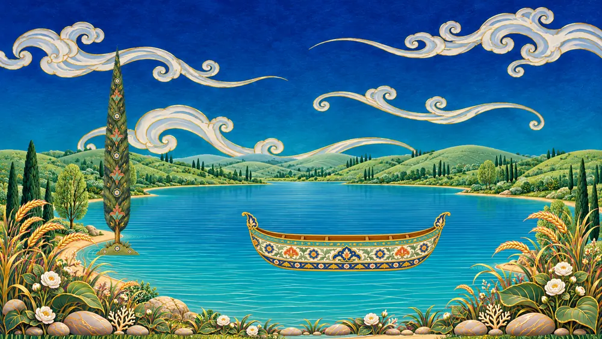
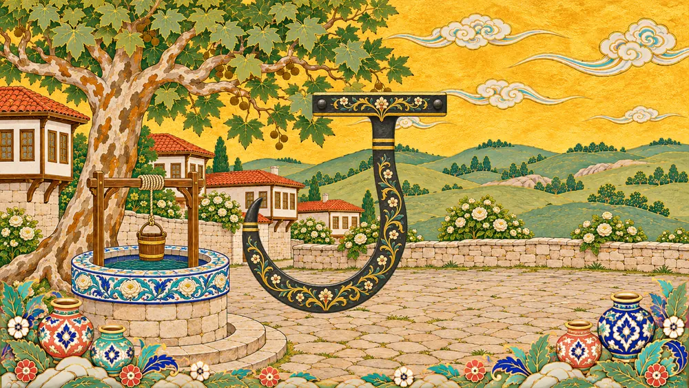
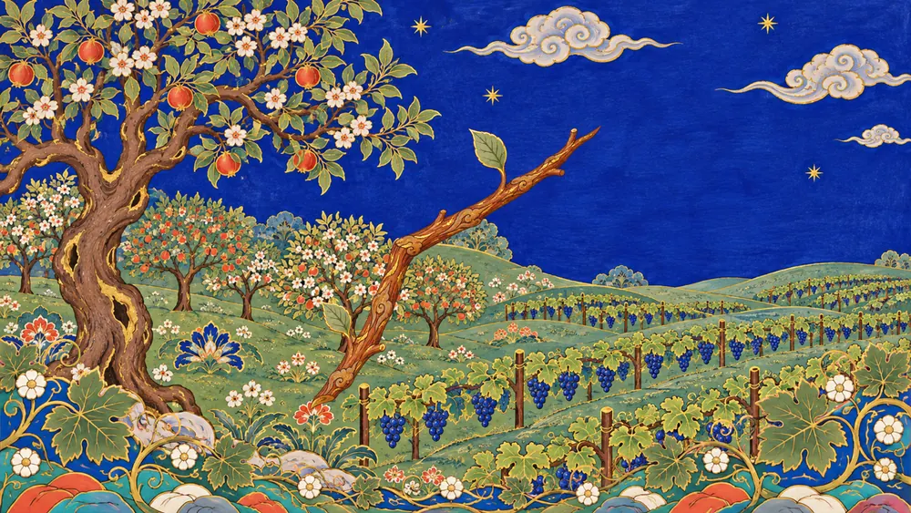
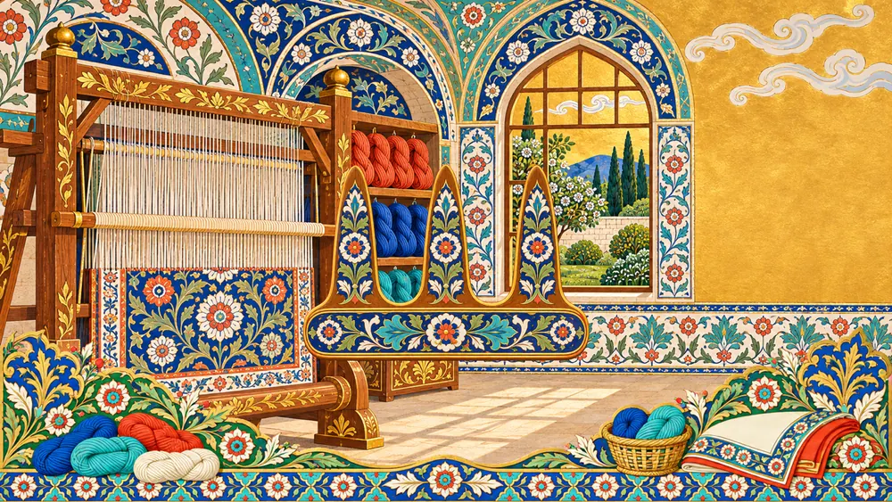
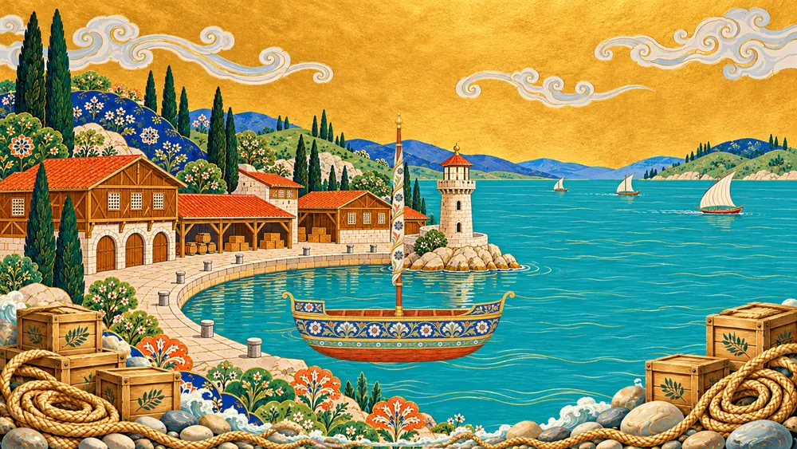
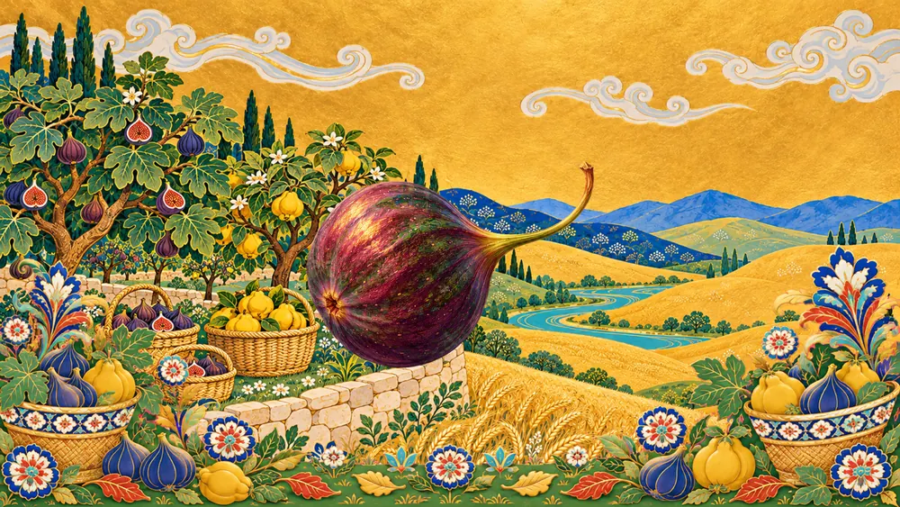
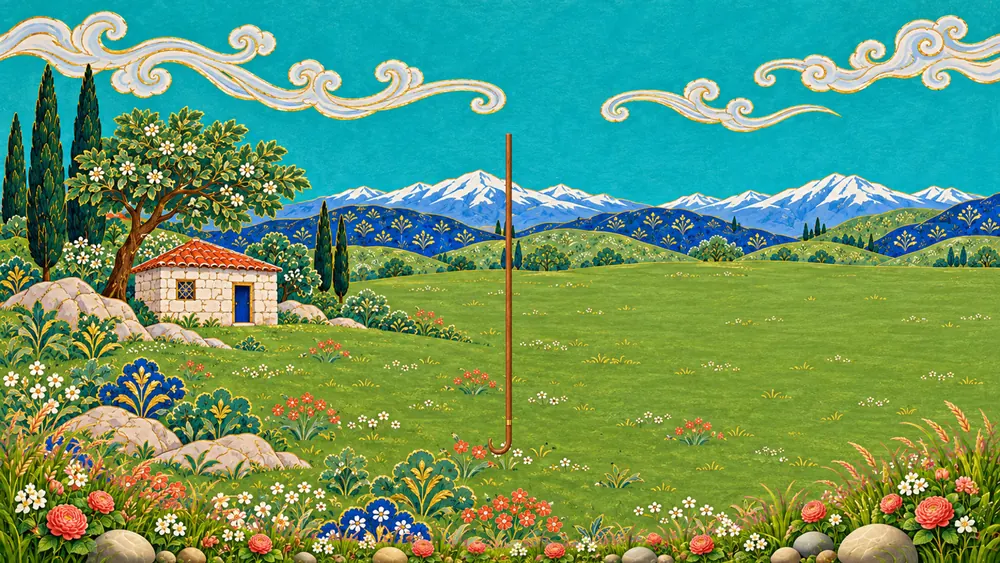
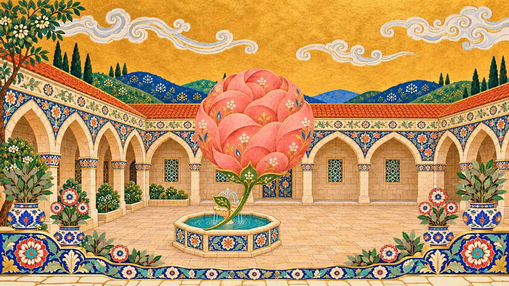

Elifbâ Dersleri
Bütün harfler sekiz derste. Ders ekranda akar, Hâfız Efendi okur, sen tekrar edersin, sonra kendin okursun.

1. DersBesmele ve İlk Dört Harf
ا ب ت ث
2. DersCim, Ha, Hı
ج ح خ
3. DersDal, Zel, Ra, Ze
د ذ ر ز
4. DersSin, Şın, Sad, Dad
س ش ص ض
5. DersTı, Zı, Ayn, Gayn
ط ظ ع غ
6. DersFe, Kaf, Kef
ف ق ك
7. DersLam, Mim, Nun
ل م ن
8. DersVav, He, Lamelif, Ye
و ه لا ى